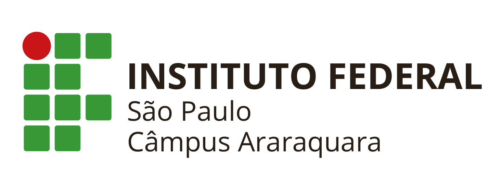

|  | |||
|
|||
|
Friday, February 17, 2023 |
|||
|
Atenção:
EDITAL Nº 003/2023 - PROGRAMA DE AUXÍLIO PERMANÊNCIA 2023
Orientações:
Todos os estudantes, no ato da inscrição, deverão fazer o upload dos documentos comprobatórios da renda familiar de todos os membros do núcleo familiar, bem como os demais documentos, conforme item 6 deste Edital.
|
Novidades: Links úteis: Contatos: |
||
|
Last Updated: 8:45am 17-Feb-2023. |
|||